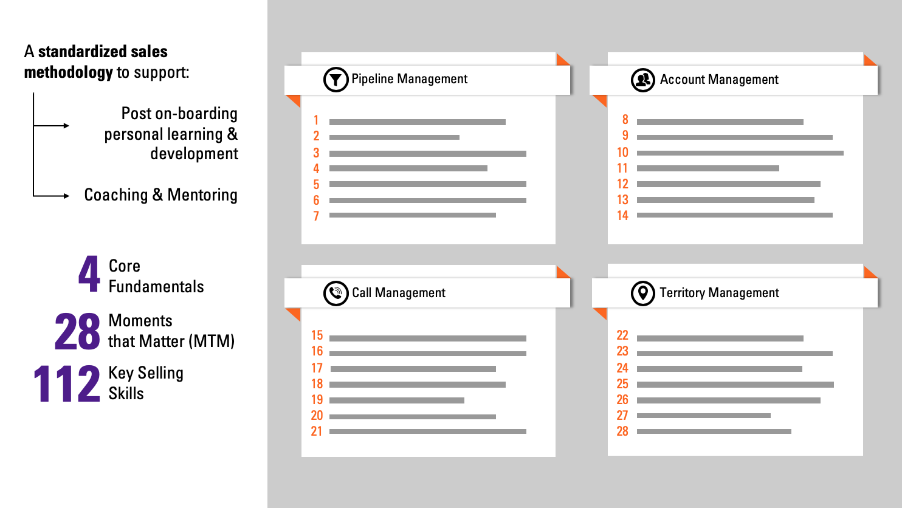
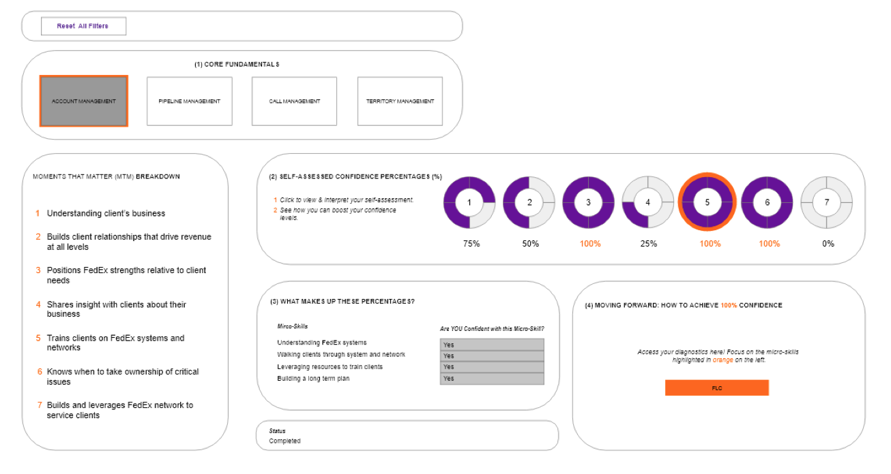
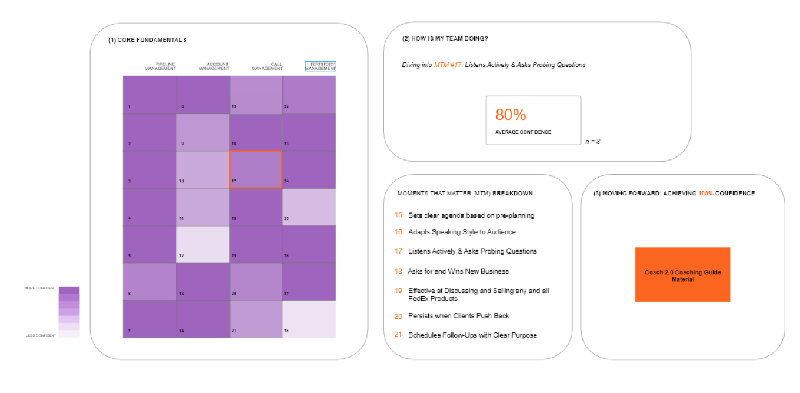

Summer Initiatives
My primary project was to design a Sales Learning Dashboard, in alignment with FedEx's Moments that Matter initiative, to help both sales professionals and leadership visualize their competencies in key selling skills.
Sales University
FedEx's learning management system, Sales U, developed a standardized sales methodology to highlight these important skills. These 112 key skills are enveloped by 4 Core Fundamentals and fall within 28 Moments that Matter that define the FedEx selling experience.
Process
The phases below outline each milestone of my project. They include designing wireframes to actualize what information and data I needed, using a user-centered design approach and conducting usability tests to get feedback on how sales would like to see the product unfold, and more.
- Phase 1: Team Brainstorming
- Phase 2: Adobe XD Wireframes
Professional's Dashboard
Director's Dashboard
- Phase 3: Usability Testing
- Phase 4: Build-out with TIBCO Spotfire, SQL Management Studio & WSSO Integration
- Phase 5: Refining Data